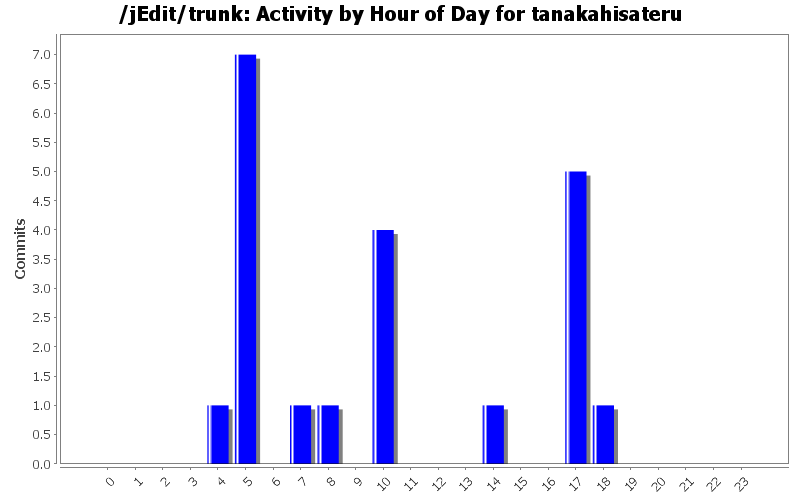
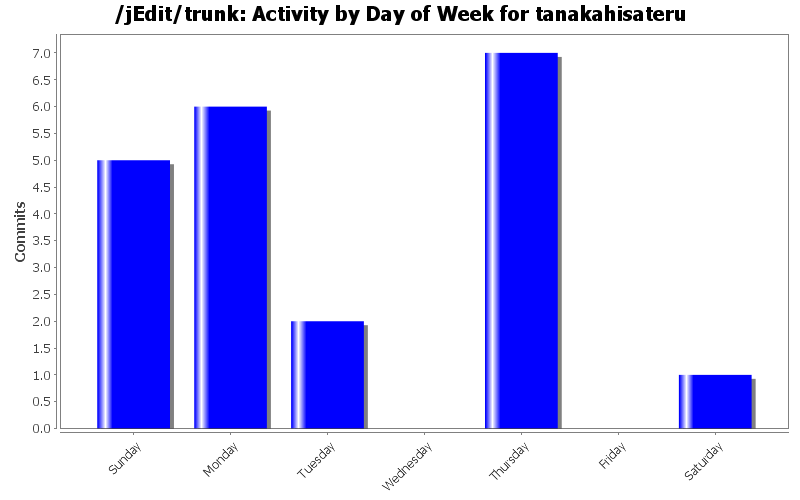
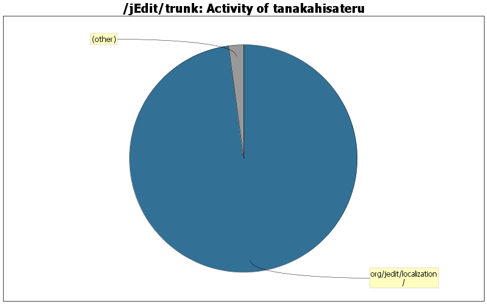

| Directory | Changes | Lines of Code | Lines per Change |
|---|---|---|---|
| Totals | 21 (100.0%) | 2727 (100.0%) | 129.8 |
| org/jedit/localization/ | 11 (52.4%) | 2669 (97.9%) | 242.6 |
| org/gjt/sp/jedit/ | 8 (38.1%) | 56 (2.1%) | 7.0 |
| org/gjt/sp/jedit/gui/statusbar/ | 2 (9.5%) | 2 (0.1%) | 1.0 |

Sync Japanese localization to jedit_en.
14 lines of code changed in 1 file:
Japanese translation for recent changes below.
r21916: Use of a scrollable list for delete dialog confirmation #2911520
r21896, r21897: Implemented Feature request #2931321 - Disable obsolete plugins
3 lines of code changed in 1 file:
Follow up for r21818: Calling removePluginLocalizationProps() was missing when plugin unloaded.
1 lines of code changed in 1 file:
Implementation proposal for #3535945 to fix property priority order.
PropertyManager: added pluginLocalizations list.
PluginJAR: modified to use separated PropertyManager's prop list.
46 lines of code changed in 3 files:
Fixed #3534917 Plugin translations not read as UTF-8
5 lines of code changed in 1 file:
Fix for rev 21796: Separate message entry to keep "Remove Current" in error dialog.
9 lines of code changed in 6 files:
Fix message reference in error dialog.
A button caption of error dialog was for shortcut key setting originally.
1 lines of code changed in 1 file:
Japanese translation maintenance:
All of OK and Cancel are simplified.
Better Japanese message for r21772.
5 lines of code changed in 1 file:
Japanese traslation completed based on r21759.
110 lines of code changed in 1 file:
Sync Japanese localization to jedit_en. (but work in progress)
286 lines of code changed in 1 file:
The previous commit had a wrong comment in jedit_gui.props.
2 lines of code changed in 1 file:
Japanese localization completed.
- "ja" added to available.lang in jedit.props.
- A label (displayed by Kanji gryph) was added as
options.appearance.lang.ja to jedit_gui.props.
- UTF-8 encoded jedit_ja.props added.
2245 lines of code changed in 3 files: